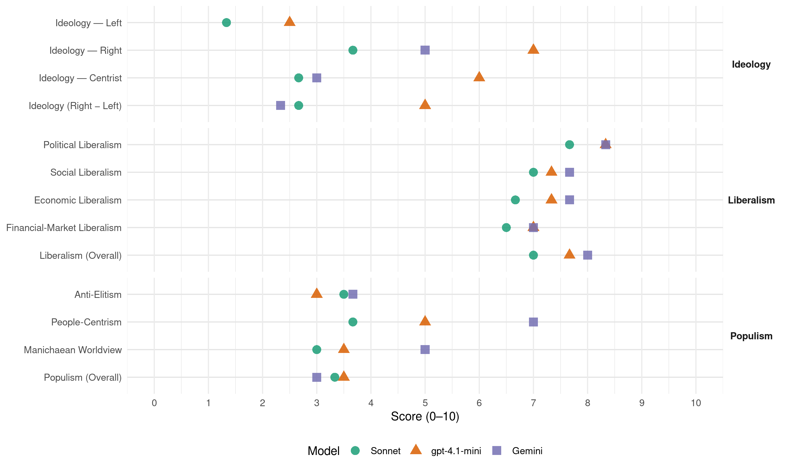

PP (Spain, 2023)
manifesto_id 33610_202307
Get full text: This site shows derived annotations and short verbatim quotes only. The full manifesto text is © Manifesto Project / WZB — obtain it via manifesto-project.wzb.eu using the manifesto_id above.
Headline scores
| Dimension | Sonnet | gpt-4.1-mini | Gemini |
|---|---|---|---|
| Populism (Overall) | 3.3 | 3.5 | 3.0 |
| Anti-Elitism | 3.5 | 3.0 | 3.7 |
| People-Centrism | 3.7 | 5.0 | 7.0 |
| Manichaean Worldview | 3.0 | 3.5 | 5.0 |
| Ideology (Right − Left) | 2.7 | 5.0 | 2.3 |
| Liberalism (Overall) | 7.0 | 7.7 | 8.0 |
| Political Liberalism | 7.7 | 8.3 | 8.3 |
| Social Liberalism | 7.0 | 7.3 | 7.7 |
| Economic Liberalism | 6.7 | 7.3 | 7.7 |
| Financial-Market Liberalism | 6.5 | 7.0 | 7.0 |
Evidence per dimension
Economic Liberalism
Gemini · score 8.0 · verified · chunk 1
“impulse la libre iniciativa, el desarrollo empresarial”
un marco regulatorio que impulse la libre iniciativa, el desarrollo empresarial, que sea un polo de
Gemini · score 7.0 · verified · chunk 2
“fomentando la colaboración público-privada”
Avanzaremos en la dualización real de la Formación Profesional implicando a las empresas, fomentando la colaboración público-privada y el contacto
Gemini · score 8.0 · verified · chunk 3
“la economía de mercado”
el respeto al Estado de Derecho, la economía de mercado y las sociedades abiertas.
gpt-4.1-mini · score 8.0 · verified · chunk 1
“reducir la presión fiscal y al tiempo facilitar la prestación eficiente de los servicios públicos fundamentales”
Necesitamos potenciar los sectores que, como el sector agroalimentario y pesquero, el industrial, el turismo y los servicios, o el energético, nos dan ventajas competitivas sobre los demás miembros de la Unión Europea y en los mercados internacionales.
gpt-4.1-mini · score 6.0 · verified · chunk 2
“Reduciremos el desproporcionado número de ministerios y cargos de confianza”
Es preciso que el Gobierno vuelva a ser fiable, eficiente y riguroso en el uso de los recursos públicos. Reduciremos el desproporcionado número de ministerios y cargos de confianza, que se ha multiplicado injustificadamente durante los últimos años y haremos un uso riguroso de los recursos públicos.
gpt-4.1-mini · score 8.0 · verified · chunk 3
“la política de competencia europea que preserve al mismo tiempo el mercado interior y la competitividad de las empresas europeas”
DEFENDEREMOS UNA POLÍTICA DE COMPETENCIA EUROPEA que preserve al mismo tiempo el mercado interior y la competitividad de las empresas europeas en los mercados globales.
Sonnet · score 7.0 · verified · chunk 1
“libre iniciativa, el desarrollo empresarial”
es necesario un marco regulatorio que impulse la libre iniciativa, el desarrollo empresarial, que sea un polo de atracción de inversiones y de talento internacional.
Sonnet · score 6.0 · verified · chunk 2
“colaboración público-privada y el contacto con el tejido industrial”
Avanzaremos en la dualización real de la Formación Profesional implicando a las empresas, fomentando la colaboración público-privada y el contacto con el tejido industrial para mejorar su empleabilidad.
Sonnet · score 7.0 · verified · chunk 3
“la economía de mercado y las sociedades abiertas”
FRENTE A POPULISMOS Y RADICALISMOS, España proyectará los valores de la libertad, la democracia, los derechos humanos, el respeto al Estado de Derecho, la economía de mercado y las sociedades abiertas.
Financial-Market Liberalism
Gemini · score 7.0 · verified · chunk 1
“hacer más atractivos los mercados de capitales”
requisites de cotización a fin de hacer más atractivos los mercados de capitales para las pequeñas y medianas
gpt-4.1-mini · score 7.0 · verified · chunk 1
“facilitaremos el acceso fuentes de financiación alternativas a la bancaria”
FACILITAREMOS LA FINANCIACIÓN DE LAS PYMES, permitiendo el acceso fuentes de financiación alternativas a la bancaria. También reforzaremos el papel del capital riesgo con una mayor implicación de instituciones como ENISA o ICO en el diseño de estrategias de financiación diseñadas para pymes y simplificaremos los requisites de cotización a fin de hacer más atractivos los mercados de capitales para las pequeñas y medianas empresas.
gpt-4.1-mini · score 7.0 · verified · chunk 3
“la digitalización de la Administración Pública, especialmente en el ámbito de los servicios de empleo, fomentando su automatización”
DESARROLLAREMOS Y FOMENTAREMOS LA DIGITALIZACIÓN DE LA ADMINISTRACIÓN PÚBLICA, especialmente en el ámbito de los servicios de empleo, fomentando su automatización para acortar los tiempos de tramitación y pago y reducir la carga burocrática para los beneficiarios.
Sonnet · score 7.0 · verified · chunk 1
“mercados de capitales para las pequeñas y medianas empresas”
simplificaremos los requisites de cotización a fin de hacer más atractivos los mercados de capitales para las pequeñas y medianas empresas, en consonancia y como desarrollo de la normativa europea que promueve la Unión de Mercados de Capitales.
Sonnet · score 6.0 · verified · chunk 3
“Instituto de Crédito al Desarrollo”
promoviendo la creación de un Instituto de Crédito al Desarrollo, similar a los que tienen los países más avanzados, que aglutine y canalice la ayuda económica y financiera.
Political Liberalism
Gemini · score 8.0 · verified · chunk 1
“garantizaremos la independencia de los organismos”
la erosion institucional y garantizaremos la independencia de los organismos del Estado para que vuelvan
Gemini · score 8.0 · verified · chunk 2
“recuperar la confianza en las instituciones y en el Estado de Derecho”
REGENERAR Y RESPETAR RECUPERAR LA CONFIANZA EN LAS INSTITUCIONES Y EN EL ESTADO DE DERECHO: LA NECESARIA REGENERACIÓN DEMOCRÁTICA
Gemini · score 9.0 · verified · chunk 3
“la democracia, los derechos humanos”
proyectará los valores de la libertad, la democracia, los derechos humanos, el respeto al Estado de Derecho
gpt-4.1-mini · score 8.0 · verified · chunk 1
“Garantizar la independencia de las instituciones y organismos del Estado”
Garantizar la independencia de las instituciones y organismos del Estado para que vuelvan a estar al servicio de los ciudadanos.
gpt-4.1-mini · score 8.0 · verified · chunk 2
“reforma de la ley Orgánica, incluyendo la modificación del sistema de elección de los miembros del Consejo”
REFORZAREMOS LAS GARANTÍAS DE INDEPENDENCIA DEL PODER JUDICIAL, mediante la reforma de su ley Orgánica, incluyendo la modificación del sistema de elección de los miembros del Consejo de manera que sean los jueces y magistrados los que elijan a los 12 vocales de procedencia judicial. Derogaremos la reforma que hoy impide su normal funcionamiento.
gpt-4.1-mini · score 9.0 · verified · chunk 3
“la ley de transparencia de 2013, reforzando el derecho de acceso a la información pública”
MEJORAREMOS LA LEY DE TRANSPARENCIA DE 2013, reforzando el derecho de acceso a la información pública yla capacidad de respuesta del Consejo de transparencia y buen gobierno y el cumplimiento de sus resoluciones.
Sonnet · score 7.0 · verified · chunk 1
“Garantizar la independencia de las instituciones y organismos del Estado”
REGENERAR Y RESPETAR: 1. Garantizar la independencia de las instituciones y organismos del Estado. 2. Promover de forma efectiva la convivencia de todos.
Sonnet · score 8.0 · verified · chunk 2
“necesaria regeneración democrática”
reafirmar nuestro compromiso decidido con el imprescindible respeto a las instituciones y la necesaria regeneración democrática tal y como fue suscrito solemnemente por nuestro presidente
Sonnet · score 8.0 · verified · chunk 3
“la democracia liberal pugna con derivas autoritarias”
la democracia liberal pugna con derivas autoritarias, extremistas y populistas; surgen amenazas sobre la construcción europea, que es un empeño compartido e inequívoco de la sociedad y de los gobiernos españoles.
Liberalism (Overall)
Gemini · score 8.0 · verified · chunk 1
“impulse la libre iniciativa, el desarrollo empresarial”
un marco regulatorio que impulse la libre iniciativa, el desarrollo empresarial, que sea un polo de
Gemini · score 8.0 · verified · chunk 2
“recuperar la confianza en las instituciones y en el Estado de Derecho”
REGENERAR Y RESPETAR RECUPERAR LA CONFIANZA EN LAS INSTITUCIONES Y EN EL ESTADO DE DERECHO: LA NECESARIA REGENERACIÓN DEMOCRÁTICA
Gemini · score 8.0 · verified · chunk 3
“la economía de mercado”
el respeto al Estado de Derecho, la economía de mercado y las sociedades abiertas.
gpt-4.1-mini · score 8.0 · verified · chunk 1
“Garantizar la independencia de las instituciones y organismos del Estado”
Garantizar la independencia de las instituciones y organismos del Estado para que vuelvan a estar al servicio de los ciudadanos.
gpt-4.1-mini · score 7.0 · verified · chunk 2
“reforma de su ley Orgánica, incluyendo la modificación del sistema de elección de los miembros del Consejo”
REFORZAREMOS LAS GARANTÍAS DE INDEPENDENCIA DEL PODER JUDICIAL, mediante la reforma de su ley Orgánica, incluyendo la modificación del sistema de elección de los miembros del Consejo de manera que sean los jueces y magistrados los que elijan a los 12 vocales de procedencia judicial. Derogaremos la reforma que hoy impide su normal funcionamiento.
gpt-4.1-mini · score 8.0 · verified · chunk 3
“la ley de transparencia de 2013, reforzando el derecho de acceso a la información pública”
MEJORAREMOS LA LEY DE TRANSPARENCIA DE 2013, reforzando el derecho de acceso a la información pública yla capacidad de respuesta del Consejo de transparencia y buen gobierno y el cumplimiento de sus resoluciones.
Sonnet · score 7.0 · verified · chunk 1
“marco regulatorio que impulse la libre iniciativa”
es necesario un marco regulatorio que impulse la libre iniciativa, el desarrollo empresarial, que sea un polo de atracción de inversiones y de talento internacional.
Sonnet · score 7.0 · verified · chunk 2
“respeto a las instituciones y la necesaria regeneración democrática”
reafirmar nuestro compromiso decidido con el imprescindible respeto a las instituciones y la necesaria regeneración democrática
Sonnet · score 7.0 · verified · chunk 3
“la democracia liberal pugna con derivas autoritarias”
la democracia liberal pugna con derivas autoritarias, extremistas y populistas; surgen amenazas sobre la construcción europea, que es un empeño compartido e inequívoco de la sociedad y de los gobiernos españoles.
Anti-Elitism
Gemini · score 6.0 · verified · chunk 1
“intereses de sus políticos que a atender”
dedicado más tiempo a hablar de los intereses de sus políticos que a atender sus necesidades. La misma mayoría
Gemini · score 4.0 · verified · chunk 2
“frente a la desidia del actual Gobierno”
Por eso, frente a la desidia del actual Gobierno, el Partido Popular se compromete a estudiar
Gemini · score 1.0 · verified · chunk 3
“Frente a populismos y radicalismos”
325 FRENTE A POPULISMOS Y RADICALISMOS, España proyectará los valores de la libertad
gpt-4.1-mini · score 3.0 · verified · chunk 1
“la frivolidad, la división y el deterioro que hemos padecido en los años del sanchismo”
Hoy tenemos ante nosotros la posibilidad de pasar página de manera definitiva de la frivolidad, la división y el deterioro que hemos padecido en los años del sanchismo y abrir un tiempo en el que abordar la necesaria reconstrucción económica, social e institucional de nuestro país.
gpt-4.1-mini · score 3.0 · verified · chunk 2
“el Gobierno ha colonizado todos esos organismos para someterlos a su control partidista”
El adecuado funcionamiento del Estado de Derecho depende de las neutralidad de instituciones reguladoras que aseguran el equilibrio de poder y el buen servicio de la Administración. En estos años, el Gobierno ha colonizado todos esos organismos para someterlos a su control partidista. El Partido Popular presentó a comienzos de 2023 un gran Plan de Calidad institucional que garantiza la independencia y profesionalidad de esas instituciones.
Sonnet · score 5.0 · verified · chunk 1
“la frivolidad, la división y el deterioro que hemos padecido en los años del sanchismo”
Hoy tenemos ante nosotros la posibilidad de pasar página de manera definitiva de la frivolidad, la división y el deterioro que hemos padecido en los años del sanchismo y abrir un tiempo en el que abordar la necesaria reconstrucción
Sonnet · score 4.0 · mixed · chunk 2
“según el manual populista de asalto a las instituciones”
sus socios han emprendido una campana constante de desprestigio contra el poder judicial, según el manual populista de asalto a las instituciones. Frente al uso partidista
Sonnet · score 2.0 · verified · chunk 3
“Al contrario de lo que ha hecho el Gobierno de coalición”
desde el Partido Popular estamos convencidos de que la política exterior debe ser una política de Estado, de la que debe participar tanto el líder de la oposición como el Parlamento.
Ideology — Centrist
Gemini · score 3.0 · verified · chunk 2
“frente a la desidia del actual Gobierno”
Por eso, frente a la desidia del actual Gobierno, el Partido Popular se compromete a estudiar
gpt-4.1-mini · score 6.0 · verified · chunk 1
“la unión. Quiero reunir a una gran mayoría de ciudadanos para que trabajemos juntos y para todos por la gran Nación que compartimos”
Por eso este proyecto de país se construye desde un principio fundacional: la unión. Quiero reunir a una gran mayoría de ciudadanos para que trabajemos juntos y para todos por la gran Nación que compartimos.
gpt-4.1-mini · score 6.0 · verified · chunk 2
“reafirmar nuestro compromiso decidido con el imprescindible respeto a las instituciones”
Queremos reafirmar nuestro compromiso decidido con el imprescindible respeto a las instituciones y la necesaria regeneración democrática tal y como fue suscrito solemnemente por nuestro presidente en el Oratorio de San Felipe Neri de Cádiz el pasado 23 de enero. El Plan de Calidad Institucional allí firmado sigue por tanto plenamente vigente e informa el conjunto de nuestro programa electoral.
Sonnet · score 3.0 · verified · chunk 1
“la política y los políticos como uno de los mayores problemas”
Esa mayoría decepcionada es la que hoy señala a la política y los políticos como uno de los mayores problemas de España.
Sonnet · score 4.0 · verified · chunk 2
“recuperar la voluntad de pacto y acuerdo”
El Partido Popular está plenamente comprometido en recuperar la voluntad de pacto y acuerdo en la vida pública, especialmente con el principal partido de la oposición.
Sonnet · score 1.0 · verified · chunk 3
“política exterior debe ser una política de Estado”
desde el Partido Popular estamos convencidos de que la política exterior debe ser una política de Estado, de la que debe participar tanto el líder de la oposición como el Parlamento.
Ideology — Left
gpt-4.1-mini · score 3.0 · verified · chunk 1
“Medidas como el Ingreso Mínimo Vital han fallado en el cumplimiento de su importante objetivo”
Medidas como el Ingreso Mínimo Vital han fallado en el cumplimiento de su importante objetivo de reducir el riesgo de caer en la pobreza, como ha denunciado la AIREF.
gpt-4.1-mini · score 2.0 · verified · chunk 2
“la política está para servir al ciudadano, no al poder”
La política está para servir al ciudadano, no al poder. Es preciso que el Gobierno vuelva a ser fiable, eficiente y riguroso en el uso de los recursos públicos. Reduciremos el desproporcionado número de ministerios y cargos de confianza, que se ha multiplicado injustificadamente durante los últimos años y haremos un uso riguroso de los recursos públicos.
Sonnet · score 2.0 · verified · chunk 1
“reducir la presión fiscal a los ciudadanos”
Tras años de constantes subidas de impuestos, el Partido Popular reafirma su vocación de reducir la presión fiscal a los ciudadanos. Queremos aliviar la carga fiscal de las familias, de los autónomos, de las empresas.
Sonnet · score 1.0 · verified · chunk 2
“promoveremos ayudas contra la pobreza infantil”
PROMOVEREMOS AYUDAS CONTRA LA POBREZA INFANTIL, donde España impulse y coordine un despliegue acelerado de la Garantía Infantil Europea
Sonnet · score 1.0 · verified · chunk 3
“DEFENDEREMOS EL REFUERZO DE LAS POLÍTICAS DE COHESIÓN”
DEFENDEREMOS EL REFUERZO DE LAS POLÍTICAS DE COHESIÓN económica, social y territorial a través del presupuesto comunitario.
Ideology (Right − Left)
Gemini · score 5.0 · verified · chunk 1
“cesiones a socios radicales que se recuerdan”
peores errores y las peores cesiones a socios radicales que se recuerdan en nuestra democracia.
Gemini · score 2.0 · verified · chunk 2
“frente a la desidia del actual Gobierno”
Por eso, frente a la desidia del actual Gobierno, el Partido Popular se compromete a estudiar
Gemini · score 0.0 · verified · chunk 3
“Frente a populismos y radicalismos”
325 FRENTE A POPULISMOS Y RADICALISMOS, España proyectará los valores de la libertad
gpt-4.1-mini · score 5.0 · verified · chunk 1
“la unión. Quiero reunir a una gran mayoría de ciudadanos para que trabajemos juntos y para todos por la gran Nación que compartimos”
Por eso este proyecto de país se construye desde un principio fundacional: la unión. Quiero reunir a una gran mayoría de ciudadanos para que trabajemos juntos y para todos por la gran Nación que compartimos.
gpt-4.1-mini · score 5.0 · verified · chunk 2
“reafirmar nuestro compromiso decidido con el imprescindible respeto a las instituciones”
Queremos reafirmar nuestro compromiso decidido con el imprescindible respeto a las instituciones y la necesaria regeneración democrática tal y como fue suscrito solemnemente por nuestro presidente en el Oratorio de San Felipe Neri de Cádiz el pasado 23 de enero. El Plan de Calidad Institucional allí firmado sigue por tanto plenamente vigente e informa el conjunto de nuestro programa electoral.
Sonnet · score 3.0 · verified · chunk 1
“la frivolidad, la división y el deterioro”
pasar página de manera definitiva de la frivolidad, la división y el deterioro que hemos padecido en los años del sanchismo
Sonnet · score 3.0 · verified · chunk 2
“cinco años de este Gobierno han sido un período de deterioro institucional”
Sin embargo, los cinco años de este Gobierno han sido un período de deterioro institucional acelerado para España.
Sonnet · score 2.0 · verified · chunk 3
“DEFENDEREMOS LA INTEGRIDAD TERRITORIAL, LA SOBERANÍA NACIONAL”
DEFENDEREMOS LA INTEGRIDAD TERRITORIAL, LA SOBERANÍA NACIONAL Y EL ORDEN CONSTITUCIONAL como máxima prioridad del Gobierno y de su política de defensa.
Ideology — Right
Gemini · score 5.0 · verified · chunk 1
“cesiones a socios radicales que se recuerdan”
peores errores y las peores cesiones a socios radicales que se recuerdan en nuestra democracia.
gpt-4.1-mini · score 7.0 · verified · chunk 1
“legislar con la máxima prudencia para conciliar la expresión de la identidad personal con el cuidado a las mujeres, a la infancia y a las familias”
Por ello, rechazamos también la asunción de las posiciones más extremas ante la cuestión trans: legislaremos con la máxima prudencia para conciliar la expresión de la identidad personal con el cuidado a las mujeres, a la infancia y a las familias.
gpt-4.1-mini · score 7.0 · verified · chunk 2
“Recuperaremos el delito de sedición en el Código Penal”
Creemos que los poderes públicos deben promover la Convivencia entre los españoles, en lugar de ahondar en sus diferencias. No podemos acostumbrarnos al enfrentamiento entre administraciones ni al señalamiento de ciudadanos particulares ni empresas privadas desde los cargos públicos. La política debe unir, no dividir, y mucho menos polarizar a la sociedad. HOMOLOGAREMOS LA PROTECCIÓN DE LA CONSTITUCIÓN Y LA INTEGRIDAD TERRITORIAL DEL ESTADO A LOS PAÍSES DE NUESTRO ENTORNO. Recuperaremos el delito de sedición en el Código Penal, mejorando y actualizando su tipificación, para castigar las formas más graves de deslealtad constitucional.
Sonnet · score 4.0 · verified · chunk 1
“inmigración legal cualificada basado en un sistema de puntos”
Implementaremos un nuevo programa de inmigración legal cualificada basado en un sistema de puntos que premiará la formación académica, las competencias lingüísticas y la capacidad innovadora.
Sonnet · score 4.0 · verified · chunk 2
“Recuperaremos el delito de sedición en el Código Penal”
HOMOLOGAREMOS LA PROTECCIÓN DE LA CONSTITUCIÓN Y LA INTEGRIDAD TERRITORIAL DEL ESTADO. Recuperaremos el delito de sedición en el Código Penal, mejorando y actualizando su tipificación
Sonnet · score 3.0 · verified · chunk 3
“DEFENDEREMOS LA INTEGRIDAD TERRITORIAL, LA SOBERANÍA NACIONAL”
DEFENDEREMOS LA INTEGRIDAD TERRITORIAL, LA SOBERANÍA NACIONAL Y EL ORDEN CONSTITUCIONAL como máxima prioridad del Gobierno y de su política de defensa.
Manichaean Worldview
Gemini · score 5.0 · verified · chunk 1
“empecinado en enfrentar también a los ciudadanos”
presidente paralizado por la división interna y empecinado en enfrentar también a los ciudadanos, según su ideología
gpt-4.1-mini · score 4.0 · verified · chunk 1
“la desazón de ver a su presidente paralizado por la división interna y empecinado en enfrentar también a los ciudadanos”
La misma que ha sufrido la desazón de ver a su presidente paralizado por la división interna y empecinado en enfrentar también a los ciudadanos, según su ideología, su territorio, su género o su actividad.
gpt-4.1-mini · score 3.0 · verified · chunk 2
“ataques sufridos durante la última legislatura”
Queremos recuperar el protagonismo y la integridad del Parlamento como centro de la vida política española, tras cinco años de degradación constante por parte del Gobierno. Queremos recuperar el valor de la tramitación legislativa con todas sus garantías, limitar las normas extraordinarias a los casos expresamente previstos y garantizar los derechos de los diputados y senadores en el ejercicio de sus funciones. Se trata de un aspecto fundamental de nuestro programa de fortalecimiento del Estado de Derecho y de la calidad democrática. El actual Gobierno ha atentado sistemáticamente contra la Justicia. Mientras el presidente trataba de asegurarse el control, sus socios han emprendido una campana constante de desprestigio contra el poder judicial, según el manual populista de asalto a las instituciones.
Sonnet · score 4.0 · verified · chunk 1
“los peores errores y las peores cesiones a socios radicales”
cómo de la inexperiencia, la debilidad y la soberbia de su Gobierno surgían algunos de los peores errores y las peores cesiones a socios radicales que se recuerdan en nuestra democracia.
Sonnet · score 3.0 · verified · chunk 2
“frente a la desidia del actual Gobierno”
Por eso, frente a la desidia del actual Gobierno, el Partido Popular se compromete a estudiar todo lo que se ha visto afectado
Sonnet · score 2.0 · verified · chunk 3
“FRENTE A POPULISMOS Y RADICALISMOS”
FRENTE A POPULISMOS Y RADICALISMOS, España proyectará los valores de la libertad, la democracia, los derechos humanos, el respeto al Estado de Derecho, la economía de mercado y las sociedades abiertas.
People-Centrism
Gemini · score 7.0 · verified · chunk 1
“reunir a una gran mayoría de ciudadanos”
fundacional: la unión. Quiero reunir a una gran mayoría de ciudadanos para que trabajemos juntos
gpt-4.1-mini · score 6.0 · verified · chunk 1
“la unión. Quiero reunir a una gran mayoría de ciudadanos para que trabajemos juntos y para todos por la gran Nación que compartimos”
Por eso este proyecto de país se construye desde un principio fundacional: la unión. Quiero reunir a una gran mayoría de ciudadanos para que trabajemos juntos y para todos por la gran Nación que compartimos. Por una España reformista, alegre, comprometida, libre, valiente, ilusionada y con la mirada puesta en el futuro.
gpt-4.1-mini · score 4.0 · verified · chunk 2
“la política debe unir, no dividir, y mucho menos polarizar a la sociedad”
Creemos que los poderes públicos deben promover la Convivencia entre los españoles, en lugar de ahondar en sus diferencias. No podemos acostumbrarnos al enfrentamiento entre administraciones ni al señalamiento de ciudadanos particulares ni empresas privadas desde los cargos públicos. La política debe unir, no dividir, y mucho menos polarizar a la sociedad.
Sonnet · score 5.0 · verified · chunk 1
“Hay una amplia mayoría de españoles cansada de una política”
Hay una amplia mayoría de españoles cansada de una política que se ha dedicado más tiempo a hablar de los intereses de sus políticos que a atender sus necesidades.
Sonnet · score 3.0 · verified · chunk 2
“el dinero público sí tiene dueño, los contribuyentes”
Los recursos públicos deben estar a disposición de los ciudadanos, no para uso exclusivo del Gobierno. En el Partido Popular tenemos claro que el dinero público sí tiene dueño, los contribuyentes.
Sonnet · score 3.0 · verified · chunk 3
“Una Administración abierta que escuche al ciudadano”
Una Administración abierta que escuche al ciudadano y pueda anticiparse a sus necesidades, una Administración transparente y comprensible para todos.
Populism (Overall)
Gemini · score 6.0 · verified · chunk 1
“intereses de sus políticos que a atender”
dedicado más tiempo a hablar de los intereses de sus políticos que a atender sus necesidades. La misma mayoría
Gemini · score 2.0 · verified · chunk 2
“frente a la desidia del actual Gobierno”
Por eso, frente a la desidia del actual Gobierno, el Partido Popular se compromete a estudiar
Gemini · score 1.0 · verified · chunk 3
“Frente a populismos y radicalismos”
325 FRENTE A POPULISMOS Y RADICALISMOS, España proyectará los valores de la libertad
gpt-4.1-mini · score 4.0 · verified · chunk 1
“la frivolidad, la división y el deterioro que hemos padecido en los años del sanchismo”
Hoy tenemos ante nosotros la posibilidad de pasar página de manera definitiva de la frivolidad, la división y el deterioro que hemos padecido en los años del sanchismo y abrir un tiempo en el que abordar la necesaria reconstrucción económica, social e institucional de nuestro país.
gpt-4.1-mini · score 3.0 · verified · chunk 2
“el Gobierno ha colonizado todos esos organismos para someterlos a su control partidista”
El adecuado funcionamiento del Estado de Derecho depende de las neutralidad de instituciones reguladoras que aseguran el equilibrio de poder y el buen servicio de la Administración. En estos años, el Gobierno ha colonizado todos esos organismos para someterlos a su control partidista. El Partido Popular presentó a comienzos de 2023 un gran Plan de Calidad institucional que garantiza la independencia y profesionalidad de esas instituciones.
Sonnet · score 5.0 · verified · chunk 1
“Hay una amplia mayoría de españoles cansada de una política”
Hay una amplia mayoría de españoles cansada de una política que se ha dedicado más tiempo a hablar de los intereses de sus políticos que a atender sus necesidades.
Sonnet · score 3.0 · verified · chunk 2
“uso partidista de los instrumentos del Estado”
Frente al uso partidista de los instrumentos del Estado evidenciado por este Gobierno (indultos a los líderes del procés, eliminación del delito de sedición)
Sonnet · score 2.0 · verified · chunk 3
“Al contrario de lo que ha hecho el Gobierno de coalición”
desde el Partido Popular estamos convencidos de que la política exterior debe ser una política de Estado, de la que debe participar tanto el líder de la oposición como el Parlamento.
Social Liberalism